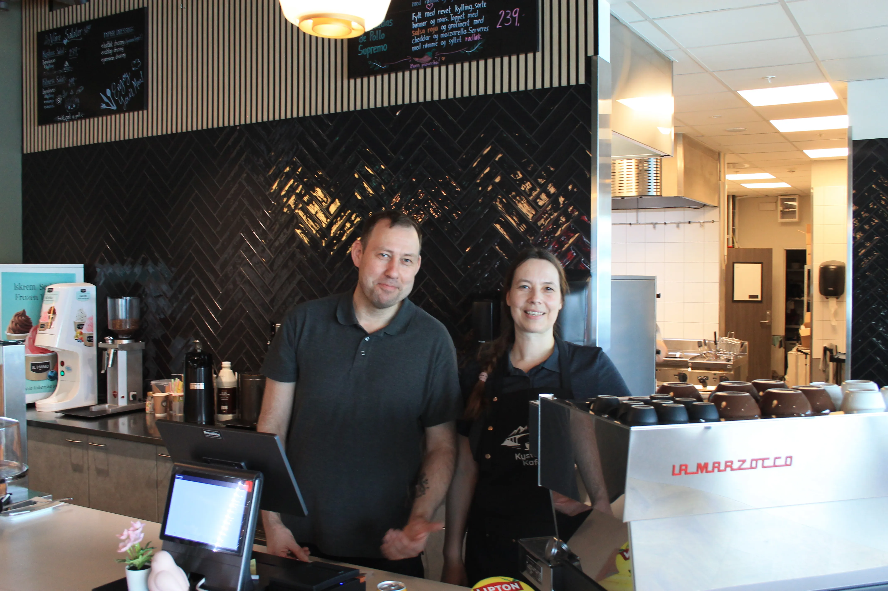

15års
drøm
drøm
Vår historie
En drøm ved havet
Katerina & Tim
I mange år drømte Katerina og Tim om dette — et sted der folk kunne komme inn, puste ut, og kjenne at de var velkomne. Et sted der kaffen alltid er nylaget, maten er laget med hjertet, og smilet er ekte.
Sortland ble stedet. Med fjordene like utenfor og midnattssolen som bader byen i gull om sommeren, fantes det ingen bedre plass å slå røtter. Her, midt i hjertet av Vesterålen, åpnet de endelig dørene til Kystens Kafé.
Hos oss handler det ikke bare om mat og kaffe — det handler om å skape øyeblikk. Mellom venner. Mellom fremmede som blir kjente. Mellom den travle hverdagen og et pusterom ved kysten.
Takk for at du er her. Nyt det, ta den tiden du trenger.